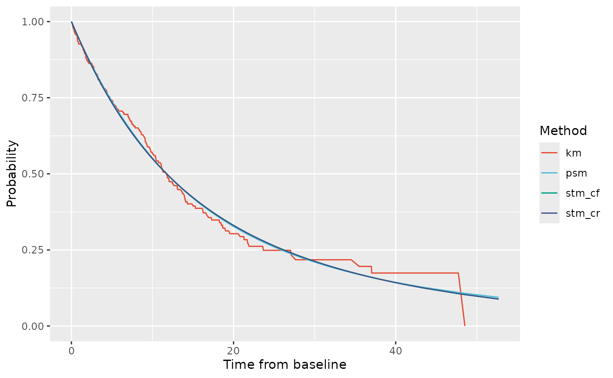
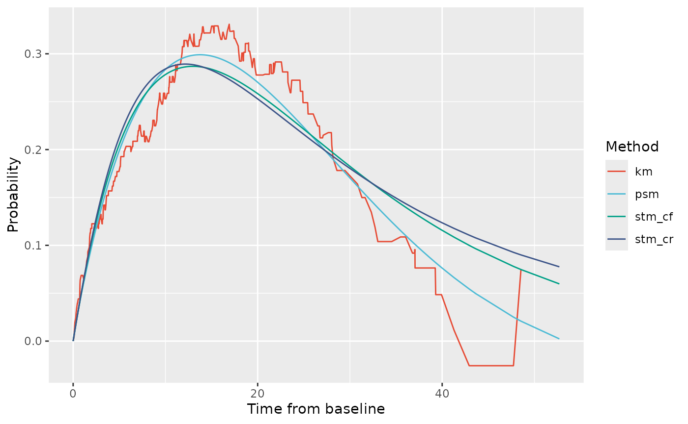
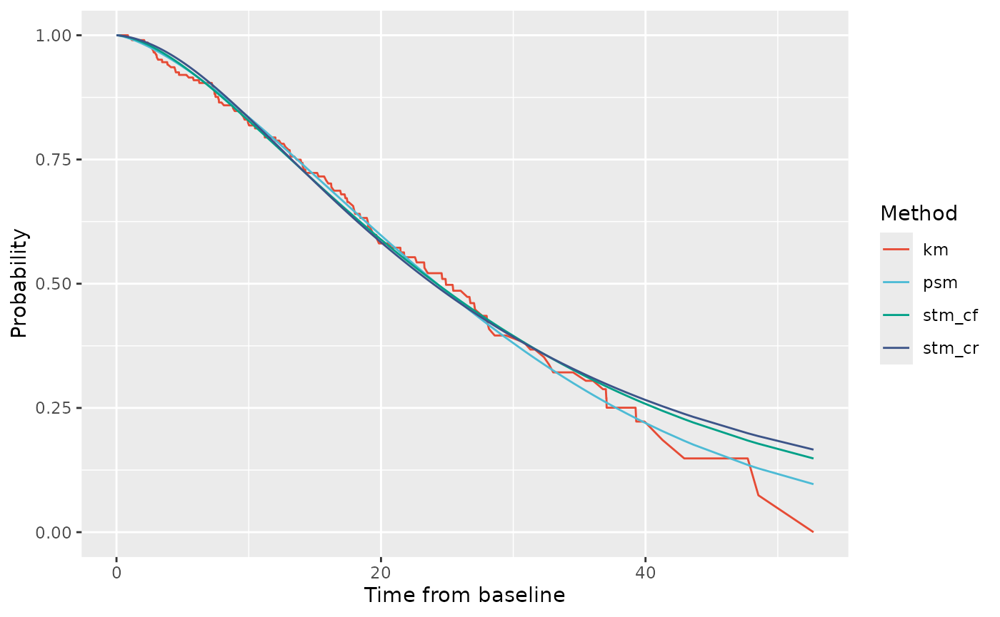
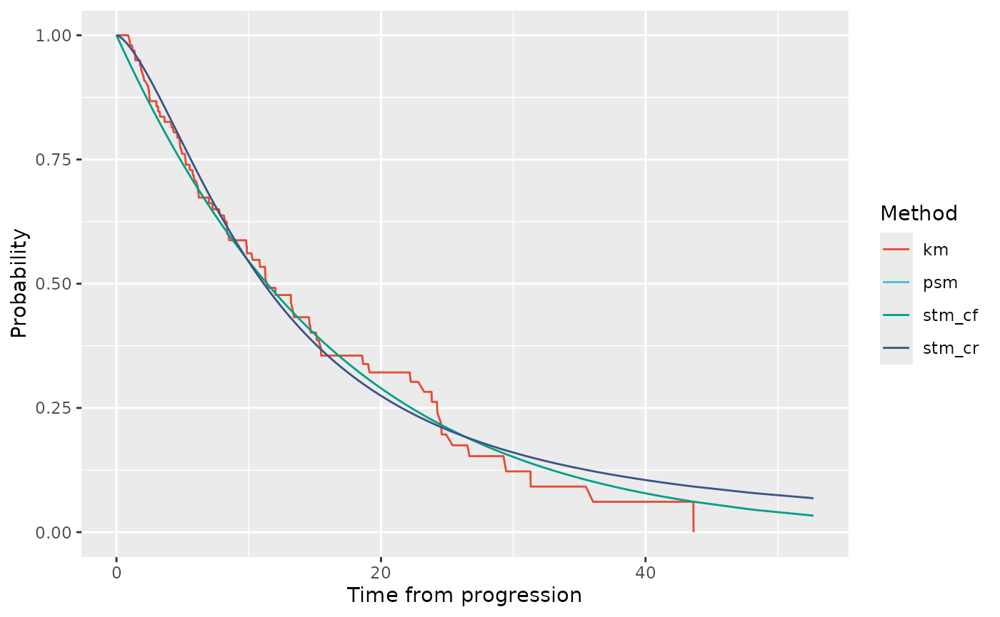

Introduction
This vignette walks through evaluating the partitioned survival model (PSM) and state transition model structures (either clock reset, STM-CR, or clock forward types, STM-CF) to a dataset derived from the bosms3 dataset that comes with the [flexsurv::flexsurv-package()].[1] A review of PSMs and STMs in oncology cost-effectiveness models is provided by Woods et al.[2]
First we need to install and load the packages of interest (with thanks to @vbaliga for this helpful code).
# Install the latest release of psm3mkv from github
require("devtools")
require("pak")
devtools::install_github("Merck/psm3mkv",
ref="main",
build_vignettes=FALSE)
#> lme4 (1.1-35.2 -> 1.1-35.3) [CRAN]
#> ── R CMD build ─────────────────────────────────────────────────────────────────
#> * checking for file ‘/tmp/RtmpM8OgTl/remotes1d9f340b6365/Merck-psm3mkv-0f96d8e/DESCRIPTION’ ... OK
#> * preparing ‘psm3mkv’:
#> * checking DESCRIPTION meta-information ... OK
#> * checking for LF line-endings in source and make files and shell scripts
#> * checking for empty or unneeded directories
#> * building ‘psm3mkv_0.2.1.tar.gz’
# First specify the packages of interest
packages <- c("psm3mkv", "dplyr", "boot", "ggsci", "flexsurv", "survival")
# Now load or install & load all
package.check <- lapply(
packages,
FUN = function(x) {
if (!require(x, character.only = TRUE)) {
install.packages(x, dependencies = TRUE)
library(x, character.only = TRUE)
}
}
)Obtaining a suitable dataset
First we create a suitable patient-level dataset using create_dummydata(). Here we load data derived from the bosms3 dataset with the flexsurv package.[2]
# Create and review the dummy dataset
bosonc <- create_dummydata("flexbosms")
head(bosonc)
#> # A tibble: 6 × 7
#> ptid pfs.durn pfs.flag os.durn os.flag ttp.durn ttp.flag
#> <int> <dbl> <dbl> <dbl> <dbl> <dbl> <dbl>
#> 1 1 18.7 1 42.9 1 18.7 1
#> 2 2 12.0 1 23.3 1 12.0 1
#> 3 3 0.452 1 8.81 1 0.452 1
#> 4 4 9.07 1 52.7 1 9.07 1
#> 5 5 47.7 0 47.7 0 47.7 0
#> 6 6 3.26 1 13.1 1 3.26 1
summary(bosonc)
#> ptid pfs.durn pfs.flag os.durn
#> Min. : 1.00 Min. : 0.1071 Min. :0.0000 Min. : 0.881
#> 1st Qu.: 51.75 1st Qu.: 4.2381 1st Qu.:0.0000 1st Qu.: 7.893
#> Median :102.50 Median : 9.7262 Median :1.0000 Median :15.226
#> Mean :102.50 Mean :11.5630 Mean :0.6471 Mean :17.055
#> 3rd Qu.:153.25 3rd Qu.:16.2321 3rd Qu.:1.0000 3rd Qu.:22.729
#> Max. :204.00 Max. :48.5357 Max. :1.0000 Max. :52.702
#> os.flag ttp.durn ttp.flag
#> Min. :0.0000 Min. : 0.1071 Min. :0.0000
#> 1st Qu.:0.0000 1st Qu.: 4.2381 1st Qu.:0.0000
#> Median :0.0000 Median : 9.7262 Median :1.0000
#> Mean :0.4755 Mean :11.5630 Mean :0.5049
#> 3rd Qu.:1.0000 3rd Qu.:16.2321 3rd Qu.:1.0000
#> Max. :1.0000 Max. :48.5357 Max. :1.0000The dataset contains TTP, PFS and OS data for 204 patients.
Fit survival curves to the relevant endpoints
The three cost-effectiveness model structures we are considering rely on modeling not only of PFS, TTP and OS, but additionally three other endpoints:
- pre-progression death (PPD),
- post progression survival as a function of time from baseline (known as ‘clock forward’, PPS-CF), and
- post-progression survival as a function of time from progression (known as ‘clock reset’, PPS-CR).
Once we have a suitable dataset, we will fit statistical models to these six endpoints.
Parametric distributions
Let us start by considering parametric distributions. This uses the function fit_ends_mods_par(), so called because it cycles through fitting endpoints and models. The original dataset contained only three of these endpoints, the other three endpoints are calculated within the function.
# Create a vector of distributions of interest (flexsurv notation)
alldists <- c("exp", "weibullPH", "llogis", "lnorm", "gamma", "gompertz", "gengamma")
# Fit all distributions to all endpoints (except gengamma to PPD and TTP)
allfits_par <- fit_ends_mods_par(bosonc,
cuttime=0,
ppd.dist=alldists[1:6],
ttp.dist=alldists[1:6],
pfs.dist=alldists,
os.dist=alldists,
pps_cf.dist=alldists,
pps_cr.dist=alldists)
# Example 1 - PFS endpoint, distribution 2 (weibullPH)
allfits_par$pfs[[2]]$result
#> Call:
#> .f(formula = ..1, dist = ..2)
#>
#> Estimates:
#> est L95% U95% se
#> shape 0.9313 0.8080 1.0733 0.0675
#> scale 0.0676 0.0453 0.1009 0.0138
#>
#> N = 204, Events: 132, Censored: 72
#> Total time at risk: 2358.845
#> Log-likelihood = -512.0729, df = 2
#> AIC = 1028.146
# Example 2 - Parameter values for PPS-CF and PPS-CR endpoints for distribution 3 (llogis)
allfits_par$pps_cf[[3]]$result$res
#> est L95% U95% se
#> shape 1.625037 1.264658 2.08811 0.2078833
#> scale 12.184292 8.588947 17.28465 2.1737642
allfits_par$pps_cr[[3]]$result$res
#> est L95% U95% se
#> shape 1.602773 1.321696 1.943626 0.1576797
#> scale 11.031674 8.769443 13.877487 1.2917274We have fitted multiple parametric distributions to each endpoint. We only need to retain the best-fitting distribution, which we select using find_bestfit_par() on the basis of the distribution having the lowest Akaike Information Criterion (AIC).
# Pick out best distribution according to min AIC
fitpar.ppd <- find_bestfit_par(allfits_par$ppd, "aic")
fitpar.ttp <- find_bestfit_par(allfits_par$ttp, "aic")
fitpar.pfs <- find_bestfit_par(allfits_par$pfs, "aic")
fitpar.os <- find_bestfit_par(allfits_par$os, "aic")
fitpar.pps_cf <- find_bestfit_par(allfits_par$pps_cf, "aic")
fitpar.pps_cr <- find_bestfit_par(allfits_par$pps_cr, "aic")
# Inspect the selection for PFS
fitpar.pfs
#> $fit
#> Call:
#> .f(formula = ..1, dist = ..2)
#>
#> Estimates:
#> est L95% U95% se
#> rate 0.05596 0.04718 0.06637 0.00487
#>
#> N = 204, Events: 132, Censored: 72
#> Total time at risk: 2358.845
#> Log-likelihood = -512.5726, df = 1
#> AIC = 1027.145
#>
#>
#> $results
#> # A tibble: 7 × 11
#> id dists npts pars loglik conv posdef aic bic rankaic rankbic
#> <int> <chr> <dbl> <dbl> <dbl> <lgl> <lgl> <dbl> <dbl> <dbl> <dbl>
#> 1 1 exp 204 1 -513. TRUE TRUE 1027. 1030. 1 1
#> 2 2 weibullPH 204 2 -512. TRUE TRUE 1028. 1035. 3 3
#> 3 3 llogis 204 2 -513. TRUE TRUE 1031. 1037. 6 5
#> 4 4 lnorm 204 2 -517. TRUE TRUE 1038. 1044. 7 7
#> 5 5 gamma 204 2 -512. TRUE TRUE 1028. 1035. 4 4
#> 6 6 gompertz 204 2 -512. TRUE TRUE 1027. 1034. 2 2
#> 7 7 gengamma 204 3 -512. TRUE TRUE 1030. 1040. 5 6Royston-Parmar splines models
An alternative approach to parametric modeling is the use of Royston-Parmar splines.[3] We can follow a similar approach, again using flexsurv [2] to identify the best-fitting spline distributions. To the six endpoints, we fit 9 spline models: 1, 2 or 3 (internal) knots with either odds, hazard or normal scales. This uses fit_ends_mods_spl().
# Fit 1-3 knot splines with all 3 scales (odds, hazard, normal) to each endpoint
allfits_spl <- fit_ends_mods_spl(bosonc)
# Example - PFS endpoint - 1 knot, odds scale
allfits_spl$pfs[[2]]$result
#> Call:
#> .f(formula = ..1, k = ..2, scale = ..3)
#>
#> Estimates:
#> est L95% U95% se
#> gamma0 -2.84806 -3.29863 -2.39748 0.22989
#> gamma1 0.83234 0.44998 1.21469 0.19508
#> gamma2 -0.02545 -0.05136 0.00045 0.01322
#>
#> N = 204, Events: 132, Censored: 72
#> Total time at risk: 2358.845
#> Log-likelihood = -511.7148, df = 3
#> AIC = 1029.43
allfits_spl$pfs[[2]]$result$aux$scale # Scale
#> [1] "odds"
allfits_spl$pfs[[2]]$result$aux$knots # Knot locations (log time)
#> 50%
#> -2.233592 2.008522 3.882300We have fitted multiple splines to each endpoint. We only need to retain the best-fitting distribution, which we select on the basis of the distribution having the lowest Akaike Information Criterion (AIC). We use find_bestfit_spl() for this.
# Pick out best distribution according to min AIC
fitspl.ppd <- find_bestfit_spl(allfits_spl$ppd, "aic")
fitspl.ttp <- find_bestfit_spl(allfits_spl$ttp, "aic")
fitspl.pfs <- find_bestfit_spl(allfits_spl$pfs, "aic")
fitspl.os <- find_bestfit_spl(allfits_spl$os, "aic")
fitspl.pps_cf <- find_bestfit_spl(allfits_spl$pps_cf, "aic")
fitspl.pps_cr <- find_bestfit_spl(allfits_spl$pps_cr, "aic")
# Inspect the selection for PFS
fitspl.pfs
#> $fit
#> Call:
#> .f(formula = ..1, k = ..2, scale = ..3)
#>
#> Estimates:
#> est L95% U95% se
#> gamma0 -1.62401 -1.84681 -1.40122 0.11367
#> gamma1 0.37082 0.20155 0.54008 0.08636
#> gamma2 -0.02243 -0.03539 -0.00947 0.00661
#>
#> N = 204, Events: 132, Censored: 72
#> Total time at risk: 2358.845
#> Log-likelihood = -511.4637, df = 3
#> AIC = 1028.927
#>
#>
#> $results
#> # A tibble: 9 × 11
#> id nknots scales npts pars loglik conv aic bic rankaic rankbic
#> <int> <dbl> <chr> <dbl> <dbl> <dbl> <lgl> <dbl> <dbl> <dbl> <dbl>
#> 1 1 1 hazard 204 3 -512. TRUE 1030. 1040. 5 3
#> 2 2 1 odds 204 3 -512. TRUE 1029. 1039. 2 2
#> 3 3 1 normal 204 3 -511. TRUE 1029. 1039. 1 1
#> 4 4 2 hazard 204 4 -512. TRUE 1032. 1045. 9 6
#> 5 5 2 odds 204 4 -511. TRUE 1031. 1044. 7 4
#> 6 6 2 normal 204 4 -511. TRUE 1031. 1044. 8 5
#> 7 7 3 hazard 204 5 -510. TRUE 1030. 1046. 3 7
#> 8 8 3 odds 204 5 -510. TRUE 1030. 1047. 6 9
#> 9 9 3 normal 204 5 -510. TRUE 1030. 1046. 4 8Combine the best fits
Finally, we select our preferred curves for each endpoint. These may or may not be those selected as the minimum AIC and may be parametric fits or spline fits. This list is deliberately programmed manually - and carefully. Our example does not use the best fits in each case but merely illustrates the options available to the modeler.
# Bring together our preferred fits for each endpoint in a list
params <- list(ppd = fitpar.ppd$fit,
ttp = fitpar.ttp$fit,
pfs = fitspl.pfs$fit,
os = fitspl.os$fit,
pps_cf = allfits_par$pps_cf[[2]]$result,
pps_cr = allfits_spl$pps_cr[[2]]$result
)Let us count how many parameters we are using in each model.
# Pull out number of parameters used for each endpoint
count_npar <- purrr::map_vec(1:6, ~params[[.x]]$npars)
# PSM uses PFS (3) and OS (4) endpoints
sum(count_npar[c(3,4)])
#> [1] 6
# STM_CF uses PPD (1), TTP (2) and PPS_CF (5) endpoints
sum(count_npar[c(1,2,5)])
#> [1] 6
# STM_CR uses PPD (1), TTP (2) and PPS_CR (6) endpoints
sum(count_npar[c(1,2,6)])
#> [1] 7Comparing likelihood values for the three model structures
Given the selected survival modeling of each endpoint, we can now calculate and compare the (log-)likelihood of each of the three model structures. We can also check this output to ensure that the number of parameters used in each model structure matches what we derived earlier.
ll_all <- calc_likes(bosonc, params)
ll_all
#> $detailed
#> # A tibble: 6 × 7
#> valid outcome npts ll_1 ll_2 ll_3 ll_4
#> <lgl> <dbl> <int> <dbl> <dbl> <dbl> <dbl>
#> 1 FALSE 4 1 NA NA NA NA
#> 2 TRUE 1 72 -64.8 -64.8 -64.7 -64.7
#> 3 TRUE 2 29 -152. -148. -147. -147.
#> 4 TRUE 3 35 -151. -149. -148. -148.
#> 5 TRUE 4 67 -469. NA NA NA
#> 6 TRUE 4 68 NA -471. -474. -474.
#>
#> $valid
#> # A tibble: 4 × 6
#> methno methname npts_TRUE npts_FALSE ll_TRUE ll_FALSE
#> <dbl> <chr> <int> <int> <dbl> <dbl>
#> 1 1 psm_simple 203 1 -836. NA
#> 2 2 psm_complex 203 1 -828. -5.11
#> 3 3 stm_cf 203 1 -828. -5.85
#> 4 4 stm_cr 203 1 -827. -6.20
#>
#> $sumall
#> # A tibble: 8 × 10
#> validall methno methname npts ll nparam aic bic rank_aic rank_bic
#> <lgl> <dbl> <chr> <int> <dbl> <dbl> <dbl> <dbl> <dbl> <dbl>
#> 1 FALSE 1 psm_simple 1 NA 7 NA NA NA NA
#> 2 FALSE 2 psm_complex 1 -5.11 8 NA NA NA NA
#> 3 FALSE 3 stm_cf 1 -5.85 6 NA NA NA NA
#> 4 FALSE 4 stm_cr 1 -6.20 7 NA NA NA NA
#> 5 TRUE 1 psm_simple 203 -836. 7 1685. 1709. 4 4
#> 6 TRUE 2 psm_complex 203 -828. 8 1672. 1698. 3 3
#> 7 TRUE 3 stm_cf 203 -828. 6 1667. 1687. 2 1
#> 8 TRUE 4 stm_cr 203 -827. 7 1667. 1690. 1 2In this case, the model structures could be fitted to 203 of the 204 patients. Among the 203 patients where models could be fitted, the STM-CR model has the greatest likelihood (best fitting) and also the lowest AIC (most efficient). (Since these are not nested models, and statistical distributions under the null hypothesis are not easily formed, we cannot readily derive a p-value for the statistical significance of this difference.)
Other measures of goodness of fit
The Brier score is a measure of goodness of fit of a survival model at a particular point in time to a set of patient time-to-event data. Originally developed for measuring the performance of weather forecasting, this metric has since been used in other applications. An extension of the Brier score is the integral of the Brier score, which is an ‘area under the curve’ measure of concordance of the survival model to a given set of patient time-to-event data. The integral is taken between the minimum and maximum event or censoring times in the dataset. Calculations are provided in the SurvMetrics R package, which can be slow to run (about 1 minute in this example).[4]
The psm3mkv package allows examination of Integrated Brier Scores in the fit of Overall Survival by each of the model structures.
# calc_ibs(bosonc, params)In this case, the IBS calculation involved integrating between times 1.18 and 52.70. The PSM had the least IBS and best fit (IBS=0.1771); the two STMs had slightly greater IBS values (0.1773 for CF and 0.1776 for CR).
Comparing the implied (restricted) mean durations
In order to understand the degree of structural uncertainty (sensitivity to the choice of model structure), we calculate the (restricted) mean durations in progression-free (PF) and progressed disease (PD) states by model type. To do this, we call the calc_allrmds() function with the dataset and statistical distributions we wish to consider for each endpoint. The function also allows specification of the patient subset to use (inclset, important for bootstrapping later) and the time horizon. The units for the time horizon are 52.18 times shorter than the units for the output because - the time horizon can be considered to be in units of years, whereas the output is in units of weeks.
# Call the RMD functions
rmd_all <- calc_allrmds(bosonc, dpam=params)
# Then review the mean duration in PF, PD and total alive (OS)
rmd_all$results
#> # A tibble: 3 × 4
#> pf pd os model
#> <dbl> <dbl> <dbl> <chr>
#> 1 22.0 5.41 27.4 PSM
#> 2 20.0 10.4 30.4 STM-CF
#> 3 20.0 13.3 33.3 STM-CRThe two STMs estimate a duration in the PF state slightly longer than the PSM. The PSM also estimates the least time in the PD state and alive overall than the other models. The STM-CF provides the longest estimate of time in the PD state and overall.
The above output can be bootstrapped to generate standard errors.
Here we use just 10 boostrap samples (R=10) just to
illustrate the process. In practice, we would want to use far more than
10 samples.
Note that the percentiles information reported indicates that in a small number of samples, the restricted mean duration in PD was restricted to be negative in the PSM. This indicates an inconsistency between the statistical models used in this case for modeling PFS and OS, and may be an additional reason why STMs may be preferred in this case.
Visual inspection of model fits
Creating the four graphics of model fit is straightforward.
# Generate graphs (can take time)
ptdgraphs <- graph_survs(bosonc, params)
#> Creating KM
#> Calculating fitted curves
#> Rearranging datasets
#> Drawing plotsWe can then compare state membership probabilities for the PF and PD states.
# State membership probabilities for PF state
ptdgraphs$graph$pf + scale_color_npg()
#> Warning: Removed 5 rows containing missing values or values outside the scale range
#> (`geom_line()`).
The PF curves fully overlap with each other in the observed period, and appear to fit well visually to the observed PF data.
# State membership probabilities for PD state
ptdgraphs$graph$pd + scale_color_npg()
#> Warning: Removed 5 rows containing missing values or values outside the scale range
#> (`geom_line()`).
There are big differences in the fit between the models to the PD membership probability. The best visual fit comes from the PSM. Both STMs estimate a higher probability of PD membership at later times than was observed. The highest probabilities are from the STM-CF model.
Next, we can look at probabilities of being alive (i.e: membership in either PF or PD state).
# State membership probabilities for OS
ptdgraphs$graph$os + scale_color_npg()
#> Warning: Removed 5 rows containing missing values or values outside the scale range
#> (`geom_line()`).
Again, all three models fit fairly well up to 15 weeks. The closest visual fit to the OS curve is from the PSM. This is not surprising because the PSM involves fitting the OS endpoint directly. Following from the PD membership graphics, both STMs appear to over-estimate OS at longer durations relative to the observed data. However, recall that overall the PSM had the worse fit to the data according to likelihood, AIC and BIC.
Finally we can look at probabilities of post-progression survival. This is observed and fitted for the STMs not the the PSM. The STM-CR estimate follows directly from the fitted PPS-CR survival curve. The STM-CF estimate is derived based on the average, across patients, of patients’ expected PPS-CF survival relative to their TTP timepoint.
# Probabilities of PPS
ptdgraphs$graph$pps + scale_color_npg()
#> Warning: Removed 85 rows containing missing values or values outside the scale range
#> (`geom_line()`).
References
Jackson C, Metcalfe P, Amdahl J, Warkentin MT, Sweeting M, Kunzmann K. flexsurv: Flexible Parametric Survival and Multi-State Models. Available at: https://cran.r-project.org/package=flexsurv.
Woods BS, Sideris E, Palmer S, Latimer N, Soares M. Partitioned Survival and State Transition Models for Healthcare Decision Making in Oncology: Where Are We Now? Value in Health 23(12):1613-21; 2020. DOI: 10.1016/j.jval.2020.08.2094
Royston P and Parmar M. Flexible parametric proportional-hazards and proportional-odds models for censored survival data, with application to prognostic modelling and estimation of treatment effects. Statistics in Medicine 21(1):2175-2197; 2002. DOI: 10.1002/sim.1203
Hanpu Z. Predictive Evaluation Metrics in Survival Analysis. Vignette to the SurvMetrics R package. July 2021. Available from: https://cran.r-project.org/package=SurvMetrics/vignettes/SurvMetrics-vignette.html